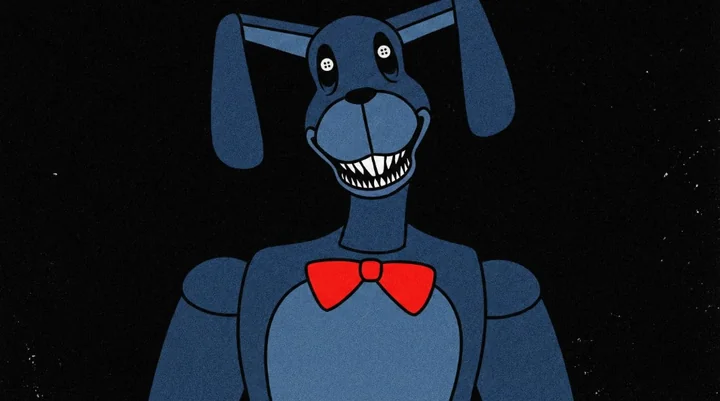

概要
『The Walten Files』は、Martin Walls が2020年からYouTubeで公開している映像シリーズである。すでに消滅した企業「バニースマイルズ社（BSI）」の社内テープや子ども向けアニメを、アンソニーという人物が集めて公開した、という体裁をとる。1974年に開店したレストラン「Bon's Burgers」と、そこで歌うアニマトロニクスのバンド「ショーストッパーズ」を紹介する明るい映像に、行方不明者の顔や、ソフィーという人物に宛てた言葉が紛れ込んでいく。
『The Walten Files』で描かれる1974年前後の連続失踪事件とソフィー・ウォルテンの記憶を軸に、各映像の内容・確定事実・仮説を整理した考察ノートである。

『The Walten Files』は、Martin Walls が2020年からYouTubeで公開している映像シリーズである。すでに消滅した企業「バニースマイルズ社（BSI）」の社内テープや子ども向けアニメを、アンソニーという人物が集めて公開した、という体裁をとる。1974年に開店したレストラン「Bon's Burgers」と、そこで歌うアニマトロニクスのバンド「ショーストッパーズ」を紹介する明るい映像に、行方不明者の顔や、ソフィーという人物に宛てた言葉が紛れ込んでいく。